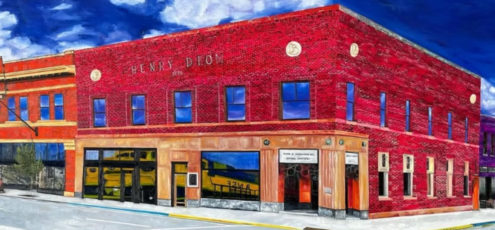

Each profile above is a TTRPG character sheet LARPING as a facepalm user.
Click a name to read their full sheet: backstory, stats, skills, and their most representative post. Use Friends to browse everyone. Use Home to come back here.
I am the curator. My stats are not listed, but if you are interested in more of my work, visit Shanel Locke Art.

L0g1c F@11acy
Facepalm Character Curator Extraordinaire
I do not have the "facepalm" app. I use the browser version out of principle to keep up with the town drama. I am not participating or giving my money to Zuckerberg.